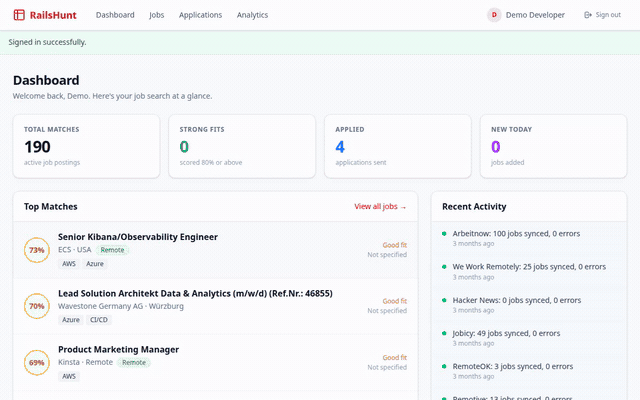

A Rails 7.2 job-matching platform that scrapes postings from real job boards on a schedule, scores each one against a resume across five weighted dimensions, and tracks applications through a full pipeline.
Why it's not deployed
The scraper fans out across several real job boards on a Sidekiq-Cron schedule — great for a personal tool, not something to leave running unattended on a public demo. Every screenshot below is the real app, run locally against 190 actually-scraped postings and real computed match scores.
How it works
Every job gets scored against the user's profile, not just keyword-matched.
| Semantic — 30% | Cosine similarity between resume and job-description embeddings (pgvector) |
| Skills — 30% | Case-insensitive overlap against required + nice-to-have skills |
| Experience — 15% | Years of experience vs. seniority inferred from the title |
| Salary — 15% | Preferred range vs. posted range overlap |
| Location — 10% | Remote preference vs. posting's remote flag and location |
Screenshots
The GIF below clicks through the dashboard, the applications Kanban pipeline, and the analytics view — all real scraped data.

Dashboard → applications pipeline (saved → applied → phone screen → interview → offer) → analytics
Engineering highlights
Every resume update re-scores against every job — without an upsert on [user_id, job_posting_id], that's an unbounded pile of stale duplicate rows instead of one row per pair that stays current.
Each job source stores its scraper class as a string constant, resolved at runtime. Adding a new job board is a new scraper class plus a new row — no changes to the fan-out job itself.
Scraping, embeddings, and scoring run on distinct Sidekiq queues with independent concurrency limits — a slow scraper can't starve the scoring pipeline of workers.
Tech stack
| Framework | Ruby on Rails 7.2 |
| Database | PostgreSQL + pgvector |
| Embeddings | OpenAI — resume + job-description embeddings, cover letters |
| Background jobs | Sidekiq + Sidekiq-Cron |
| Frontend | Hotwire, ActionCable for live activity events |